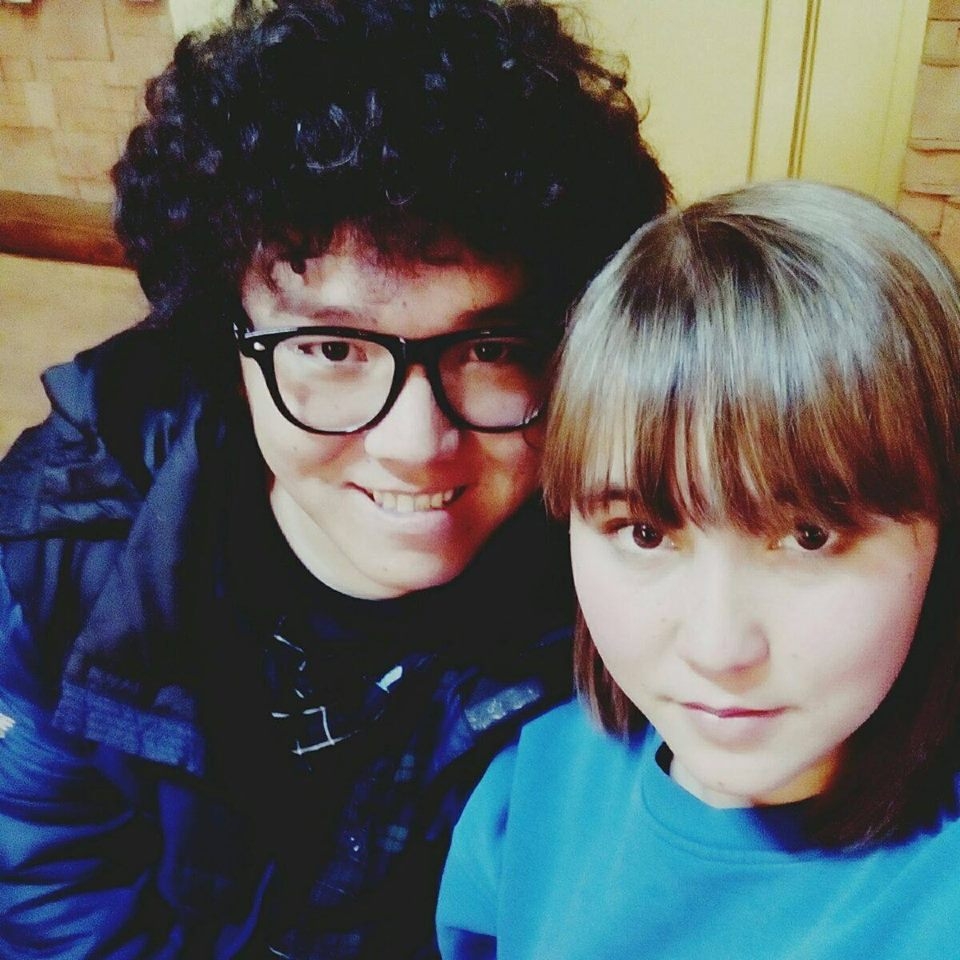

Думаю, что никому не интересна моя биография, поэтому я в кратце опишу свой путь web программиста.
Разработкой сайтов я увлёкся в 2012 году. Правда я начинал не с верстки, а с «программирование»
Поступил в Университет МУЦА на программиста, правда я недоучился только 2 курса закончил. Мне нравиться этот университет, т.к не разведешь преподавателей. Самое главное академическое честность
Начал работать в it-attractor с 2014 года, здесь я стал разработчиком python/Django
Я люблю свою работу! Во преки мнениям многих — она интересная!
Как и все люди люблю смотреть фильмы, слушать музыку, читать книги.... Внизу Вы увидите списки любымых книг, фильмов..